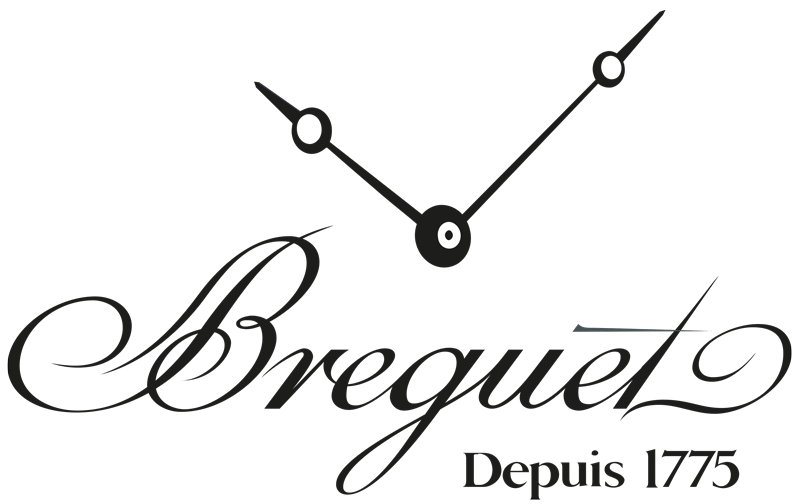
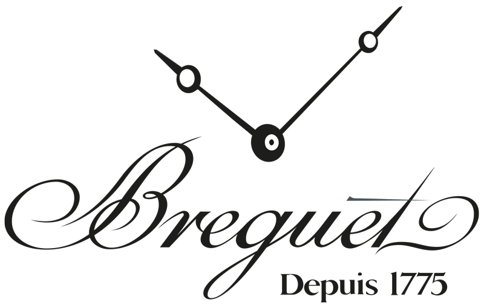

Статті та корисна інформація
ROGER DUBUIS. ЧАСТИНА 1
Цей чемпіон «гіперхорології» став синонімом надмірності й завдяки своїй радикальній скелетонізованій архітектурі неодноразово демонструє пристрасть до годинного вуайєризму. У цій серії з чотирьох статей описується нещодавня подорож на мануфактуру, де можна було спостерігати за виготовленням та оздобленням деталей, а також за збіркою та регулюванням годинників компанії.
ІСТОРІЯ ЛЮКСОВИХ ГОДИННИКІВ. ЧАСТИНА 1
Історія люксових годинників зародилася дуже давно, вона веде відлік із часів перших годинників у світі. Тоді годинник був розкішшю, яку могла собі дозволити лише найвища еліта суспільства. Навіть не всім, хто має титул і великі гроші, могли виготовити цей розкішний аксесуар. Власне, з того часу мало що змінилося.
ВЕЛИКИЙ ТА СМІЛИВИЙ TISSOT PRS 516 CHRONOGRAPH
На початку цього року компанія Tissot оновила модель PRS 516 Automatic Chronograph, але не пішла вінтажним шляхом. На противагу колекції Heritage із переконливими рімейками вінтажних моделей, PRS 516 – це сучасний хронограф із зухвалим настроєм, безліччю деталей автоспорту й за чудовою ціною.
 
